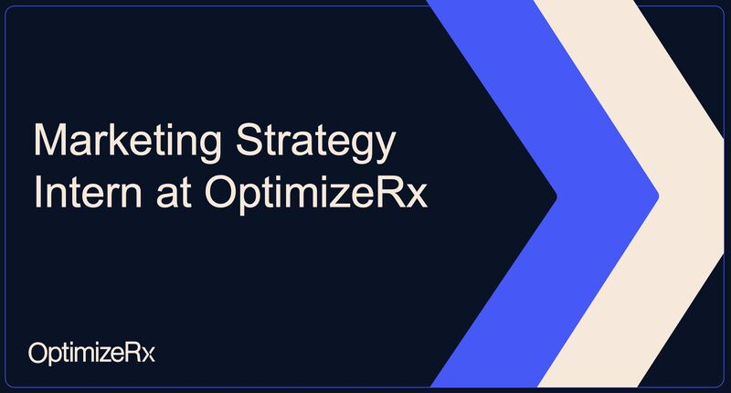
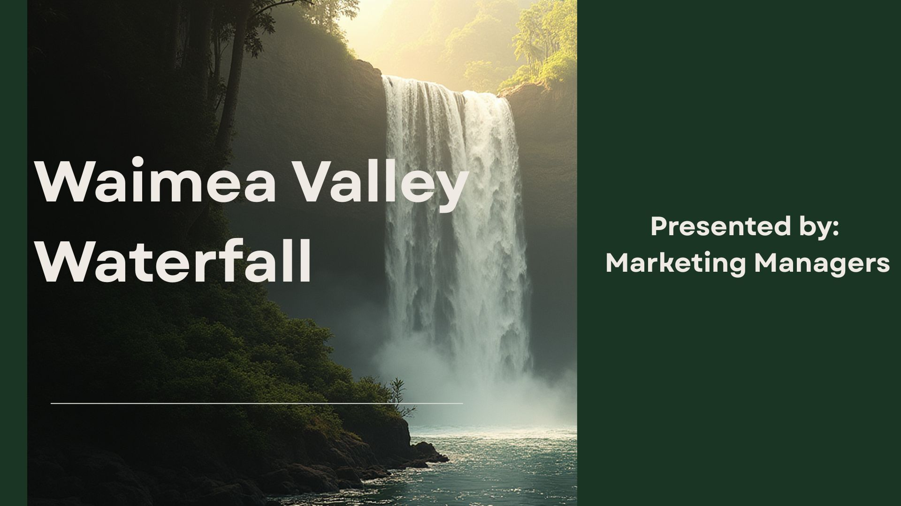
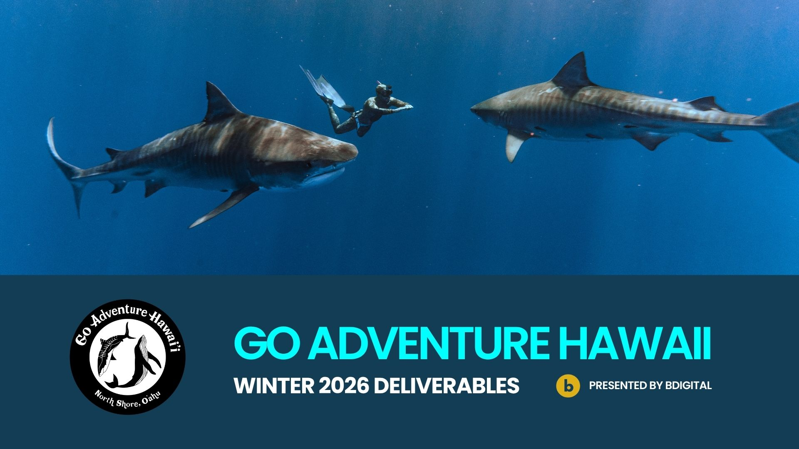
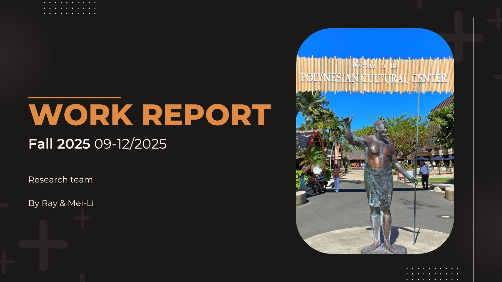

This section highlights applied experience in marketing, research, and digital strategy across multiple organizations.
Worked on healthcare marketing research focused on how physicians interact with medication cost and access tools. Analyzed industry insights, competitive positioning, and patient access systems.

Supported visitor research through surveys, focus groups, and review analysis. Helped interpret data to understand visitor motivations and experience trends.

Assisted with digital marketing tasks including content review and audience engagement strategy for tourism-focused campaigns.

Go Adventure Hawaii Presentation
Conducted research related to visitor experience and cultural engagement. Focused on understanding how guests interact with educational and cultural programming.
